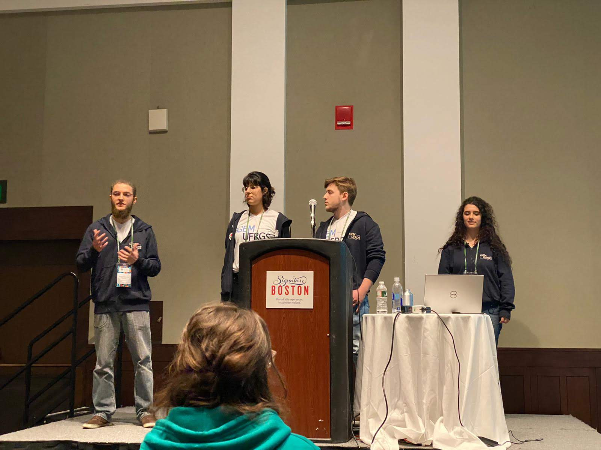
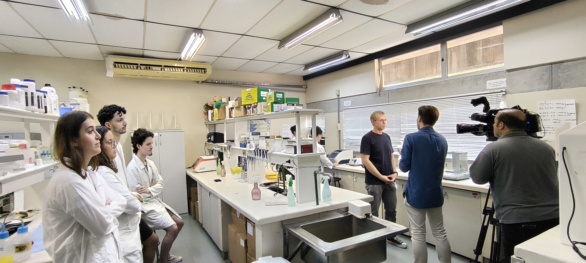
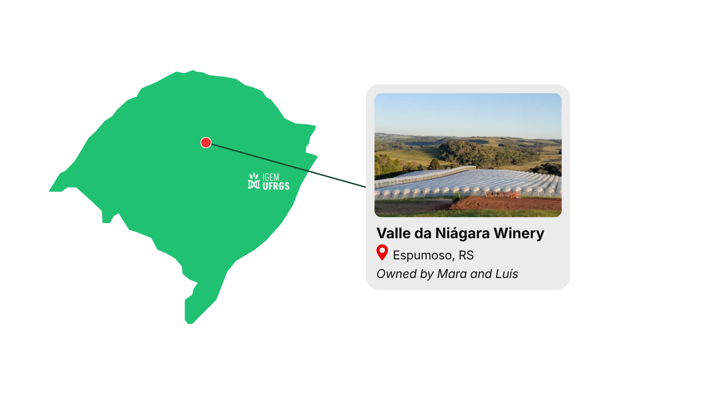
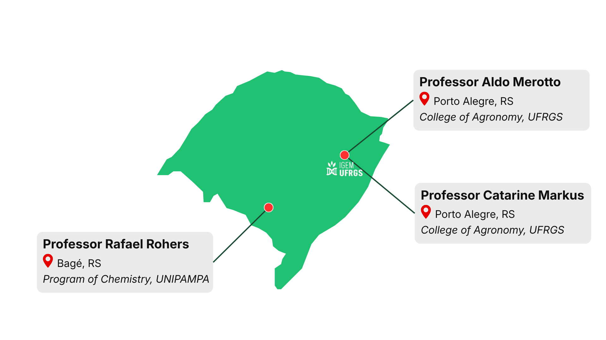
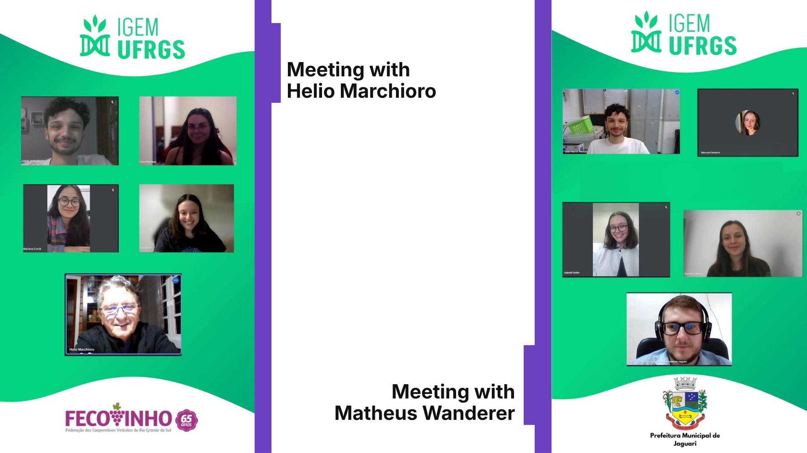
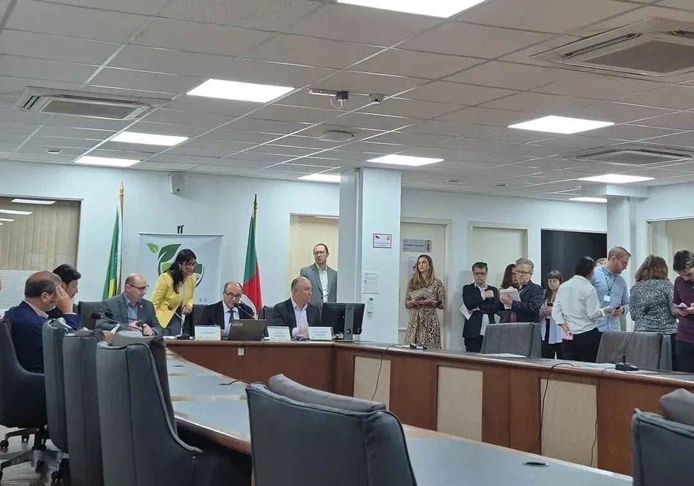

Integrated Human Practices
A biosensor is only as powerful as its applicability in the real world. To ensure our project could genuinely address the 2,4-D drift crisis in Brazil, we established a continuous dialogue with academics, policymakers, agronomists, and affected farmers. Their insights actively dictated our wet lab design, implementation strategy, and hardware engineering. We are deeply grateful to everyone who shared their time, expertise, and stories with us—without them, this project simply would not exist. Here is how the real world shaped our work.
Uncovering the Purpose
Our journey began with a motivated team eager to use synthetic biology to solve a local issue, but we lacked a clear, urgent target. The turning point came during a discussion with former iGEMer Ângelo Angonezi, who drew our attention to a massive socio-environmental crisis in southern Brazil: 2,4-D herbicide drift.

To translate this ambitious idea into a rigorous scientific endeavor, we needed strong foundational guidance. We presented the challenge to our Principal Investigator, Prof. Diego Bonatto, who immediately embraced the project, welcoming us into his laboratory and becoming a pillar of our journey. He provided continuous scientific mentorship, was always available to troubleshoot our initial designs, and established a strict framework for biosafety. His early guidance ensured that as we ventured into solving a real-world agricultural crisis, our wet lab operations remained safe and responsible from day one.

With a secure laboratory environment and a scientific foundation established, we needed to understand the true gravity of the 2,4-D issue outside our walls. We met with Alexandre Angonezi, executive director of Garibaldi, one of the largest wineries in the region, who outlined the devastating economic impact of the herbicide drift on vineyards. We then went directly to the source, meeting with local winemakers Mara and Luís from Valle da Niagara. They described the constant tension between soybean and grape growers, sharing their fears and the extreme preventive strategies they employ, such as physical covers and vegetation buffers.

2,4-D is the great villain for grapevines.
Hearing this firsthand gave our project a definitive purpose. We anchored our entire wet lab and engineering efforts toward mitigating the 2,4-D drift crisis in the Campanha region.
The Great Pivot: From Degradation to Detection
Our initial biological strategy focused on bioremediation. We planned to engineer a 2,4-D degradation system based on the catabolic pathways of Cupriavidus pinatubonensis. However, before diving into the lab, we needed to know if applying a degrading biological agent in the field was agronomically viable.
We pitched our concept to agronomy and herbology specialists Prof. Aldo Merotto Junior, Prof. Catarine Markus, and Prof. Rafael Roehrs. They critically analyzed our approach, highlighting severe limitations regarding the feasibility, environmental stability, and implementation costs of an open-environment degradation system.

A practical and fast biosensor would already be a major advance in controlling 2,4-D drift.
The experts helped us realize that the real bottleneck for farmers was not degrading the herbicide, but rather detecting it fast enough to secure legal proof and make agronomic decisions. Because 2,4-D damage is irreversible once it hits a plant, early detection is the only way to prevent the total devastation of the entire orchard. This was the most transformative moment of our project. Based on this feedback, we discarded our bioremediation pathway, returned to the drawing board, and shifted our focus toward building a biosensor, ultimately selecting the cadR/cadA regulatory elements as the core of our detection system.
Click here to see the biological system!Refining the Solution Through Bioinformatics
As we committed to the cadR/cadA biosensor, a critical new challenge emerged from our discussions with agronomists: reliability. In the field, a biosensor is only as good as its specificity. If our device triggered a false positive because of a different compound, it would cause unnecessary panic among farmers and render the tool useless.
To guarantee that our biosensor would strictly detect 2,4-D, we needed to understand the exact protein-ligand interaction at a molecular level. However, we hit a major roadblock: the 3D structure of the CadR protein had never been crystallized, and its binding mechanisms were not elucidated. We could not proceed in the wet lab blindly without knowing if the protein would actually bind to our target.
To overcome this, we sought the expertise of Prof. Maurício Rigo, a specialist in bioinformatics and molecular modeling. He guided us in bridging this knowledge gap by shifting our strategy from physical trials to computational prediction. Under his mentorship, our team developed an in silico pipeline to model the protein's 3D structure and simulate its dynamics.
Instead of relying on trial and error in the lab, these computational models allowed us to map the probable binding pocket and successfully verify its specific interaction with 2,4-D. Prof. Rigo’s insights provided the crucial proof of affinity we needed, ensuring that our biological core was trustworthy enough for real-world application before we even built the physical device.
Exposing the Analytical and Regulatory Void
With our cadR/cadA biosensor design underway, we needed to evaluate how our tool would integrate into existing regulatory and diagnostic workflows. We started by consulting Helio Marchioro, president of FECOVINHO, who detailed the historical regulatory failures surrounding 2,4-D use and the agricultural sector's prolonged struggle for effective oversight.
Shortly after, we spoke with Mateus Wanderer, an agronomist working for the municipality of Jaguari. Mateus brought a critical practical limitation to our attention: conventional 2,4-D analyses, such as HPLC or LC-MS/MS, are extremely costly in terms of time, infrastructure, and financial resources for small municipalities and family producers.

Our search for frontline insight led us to Fernando Thiessen Tuna, an agricultural inspector at the State Secretariat of Agriculture (SEAPI). Fernando disclosed that while the state previously financed laboratory testing using resources from a 2018 judicial settlement, that funding completely ran out in 2023. Today, farmers must bear the entire analytical cost alone (between R$ 400 and R$ 2,000 per sample). Beyond prohibitive fees, social tensions keep the problem hidden: many producers suffer in silence, refusing to register formal complaints to avoid retaliatory conflicts with neighboring grain producers or fear of market rejection.
These frontline accounts pointed toward massive underreporting, prompting us to examine the state's official records. While SEAPI division head Rafael Lima confirmed 440 positive drift cases between 2018 and 2023, academic research proved this figure is merely the tip of the iceberg. A survey of 395 fruit growers across 141 municipalities led by Prof. Gustavo Pinto da Silva revealed that farmers are trapped in a state of helplessness: between expensive testing and negligible chances of financial compensation, only 34.9% of affected producers ever file formal complaints. The true scale of agricultural damage drastically exceeds the state's 440 recorded cases, leaving growers with little choice but to retract investments and abandon sensitive crops like vineyards and olive groves.
To assess the technical barriers driving these costs, we consulted Prof. Renato Zanella from the Laboratory of Pesticide Residue Analysis (LARP/UFSM). He explained that because visual symptoms take up to a week to manifest—often during high summer temperatures—the herbicide rapidly degrades in leaf tissue, demanding preservation with dry ice and specialized clean-up procedures. Crucially, because state-subsidized testing ended in 2023, Rio Grande do Sul currently conducts zero ongoing official monitoring for 2,4-D drift, creating a dangerous diagnostic blind spot where damage occurs unchecked and unrecorded.
From Grassroots Advocacy to Field Implementation
The realization that public oversight had collapsed led us to engage directly with the agricultural community. Together with industry leaders, our team participated in a regional workshop addressing the hormonal herbicide crisis. Listening to moving testimonies from farmers who had watched multi-generational vineyards wither overnight—while public officials acknowledged an utter lack of diagnostic infrastructure—made it obvious that conventional testing has failed smallholders.
Driven by these testimonies, our team moved from passive observers to active advocates. We signed a joint community petition demanding urgent state intervention and monitoring resources. This engagement led to an invitation to represent our academic initiative at an official public hearing with state legislators and agricultural stakeholders.

This journey reshaped our implementation strategy. We positioned our biosensor not as a replacement for official chromatography lab reports, but as an accessible, rapid, and low-cost field screening tool, restoring the farmer’s agency to detect and document drift.
Bridging the Gap Between Biology and Engineering
By the time our biological foundation was solid, we faced a new hurdle. A biosensor is not made of biology alone; to be useful in the field, it needs a physical, functional body. Recognizing that our team lacked the electronic engineering skills required to take a hardware concept off paper, we sought a collaborative solution.
We established a partnership with ENFITEC, the Junior Enterprise of our university's Physics Engineering undergraduate program. We needed them to translate our biological reaction into a tangible device, but they delivered much more. Bringing a critical outside perspective, they actively changed our hardware design to meet real-world demands.
First, they optimized the sample collection, designing a standardized, reproducible container that fits securely into the hardware. Second, they reimagined the portability and ergonomics for field use. Most importantly, they accounted for our biological integration needs. To ensure our cadR/cadA system would function correctly outside the lab, ENFITEC integrated built-in heating elements and specific light filters directly into the hardware, creating the optimal controlled environment for the biological reaction to take place directly in the farmer's hands.
Conclusion
The device that we designed is the product of many minds and hearts working collectively to address a serious local crisis. By establishing dialogue with farmers, legal inspectors, academic specialists, and hardware engineers—and listening to the victims who lost their livelihoods—we iteratively adapted our biological system. Ultimately, our cadR/cadA biosensor was conceived by and for our community, based on real-world needs and constraints.